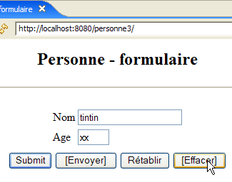
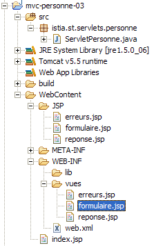
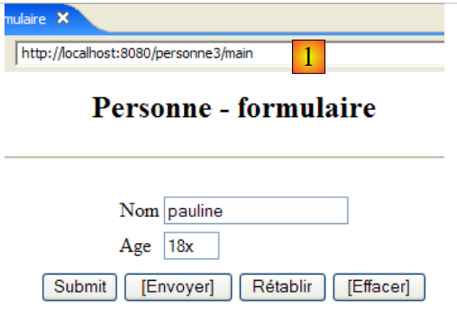

7. Application web MVC [personne] – version 3
Lectures conseillées dans [ref1] : chapitre 9
7.1. Introduction
Nous nous proposons d'ajouter du code Javascript dans les pages HTML envoyées au navigateur. C'est ce dernier qui exécute le code Javascript embarqué dans la page qu'il affiche. Cette technologie est indépendante de celle utilisée par le serveur web pour générer le document HTML (Java/servlets/JSP, ASP.NET, ASP, PHP, Perl, Python, ...).
[formulaire.jsp]
La vue issue de cette page aura l'allure suivante :

Les boutons dont le libellé est encadré font appel à du code Javascript embarqué dans la page HTML :
Libellé | Type HTML | Fonction |
<submit> | joue le rôle du bouton [Envoyer] des versions précédentes : poste au contrôleur les valeurs saisies | |
<button> | nouveau bouton – vérifie localement la validité des données saisies avant de les poster au contrôleur | |
<reset> | rétablit le formulaire dans l'état où il a été reçu initialement par le navigateur | |
<button> | efface le contenu des deux champs de saisie |
Voici un exemple d'utilisation des boutons [Envoyer] et [Effacer] :
 |  |
 |  |
Nous utiliserons également du code Javascript pour gérer le lien [Retour au formulaire] des vues [erreurs] et [réponse]. Prenons l'exemple de la vue [réponse] :
 | 1  |
La différence est dans l'url affichée en [1]. Dans la version précédente, celle-ci était :
Ici, l'action ne fait plus partie de l'Url car elle va être envoyée par un POST au lieu d'un GET. Cette modification va avoir pour effet que l'unique Url affichée par le navigateur sera [http://localhost:8080/personne3/main] quelque soit l'action demandée.
7.2. Le projet Eclipse
Pour créer le projet Eclipse [mvc-personne-03] de l'application web [/personne3], on dupliquera le projet [mvc-personne-02] en suivant la procédure décrite au paragraphe 6.2, page 78.
 |  |
7.3. Configuration de l'application web [personne3]
Le fichier web.xml de l'application /personne3 est le suivant :
<?xml version="1.0" encoding="UTF-8"?>
<web-app id="WebApp_ID" version="2.4"
xmlns="http://java.sun.com/xml/ns/j2ee"
xmlns:xsi="http://www.w3.org/2001/XMLSchema-instance"
xsi:schemaLocation="http://java.sun.com/xml/ns/j2ee http://java.sun.com/xml/ns/j2ee/web-app_2_4.xsd">
<display-name>mvc-personne-03</display-name>
<!-- ServletPersonne -->
<servlet>
<servlet-name>personne</servlet-name>
<servlet-class>
istia.st.servlets.personne.ServletPersonne
</servlet-class>
<init-param>
<param-name>urlReponse</param-name>
<param-value>
/WEB-INF/vues/reponse.jsp
</param-value>
</init-param>
<init-param>
<param-name>urlErreurs</param-name>
<param-value>
/WEB-INF/vues/erreurs.jsp
</param-value>
</init-param>
<init-param>
<param-name>urlFormulaire</param-name>
<param-value>
/WEB-INF/vues/formulaire.jsp
</param-value>
</init-param>
<init-param>
<param-name>lienRetourFormulaire</param-name>
<param-value>
Retour au formulaire
</param-value>
</init-param>
</servlet>
<!-- Mapping ServletPersonne-->
<servlet-mapping>
<servlet-name>personne</servlet-name>
<url-pattern>/main</url-pattern>
</servlet-mapping>
<!-- fichiers d'accueil -->
<welcome-file-list>
<welcome-file>index.jsp</welcome-file>
</welcome-file-list>
</web-app>
Ce fichier est identique à celui de la version précédente hormis quelques détails :
- ligne 6 : le nom d'affichage de l'application web a changé en [mvc-personne-03]
Le paramètre [urlControleur] a disparu. Dans la version précédente, il servait à fixer la cible du POST de la vue [formulaire]. Dans cette nouvelle version, la cible sera la chaîne vide, c.a.d. l'Url affichée par le navigateur. Nous avons expliqué que celle-ci serait toujours [http://localhost:8080/personne3/main], celle qu'il nous faut pour le POST de la vue [formulaire].
La page d'accueil [index.jsp] change :
<%@ page language="java" contentType="text/html; charset=ISO-8859-1"
pageEncoding="ISO-8859-1"%>
<!DOCTYPE HTML PUBLIC "-//W3C//DTD HTML 4.01 Transitional//EN">
<%
response.sendRedirect("/personne3/main");
%>
- ligne 5 : la page [index.jsp] redirige le client vers l'url du contrôleur [ServletPersonne] de l'application [/personne3].
7.4. Le code des vues
7.4.1. La vue [formulaire]
Cette vue est devenue la suivante :
Elle est générée par page JSP [formulaire.jsp] suivante :
<%@ page language="java" contentType="text/html; charset=ISO-8859-1"
pageEncoding="ISO-8859-1"%>
<!DOCTYPE HTML PUBLIC "-//W3C//DTD HTML 4.01 Transitional//EN">
<%// on récupère les données du modèle
String nom = (String) session.getAttribute("nom");
String age = (String) session.getAttribute("age");
%>
<html>
<head>
<title>Personne - formulaire</title>
<script language="javascript">
// -------------------------------
function effacer(){
// on efface les champs de saisie
with(document.frmPersonne){
txtNom.value="";
txtAge.value="";
}//with
}//effacer
// -------------------------------
function envoyer(){
// vérification des paramètres avant de les envoyer
with(document.frmPersonne){
// le nom ne doit pas être vide
champs=/^\s*$/.exec(txtNom.value);
if(champs!=null){
// le nom est vide
alert("Vous devez indiquer un nom");
txtNom.value="";
txtNom.focus();
// retour à l'interface visuelle
return;
}//if
// l'âge doit être un entier positif
champs=/^\s*\d+\s*$/.exec(txtAge.value);
if(champs==null){
// l'âge est incorrect
alert("Age incorrect");
txtAge.focus();
// retour à l'interface visuelle
return;
}//if
// les paramètres sont corrects - on les envoie au serveur
submit();
}//with
}//envoyer
</script>
</head>
<body>
<center>
<h2>Personne - formulaire</h2>
<hr>
<form name="frmPersonne" method="post">
<table>
<tr>
<td>Nom</td>
<td><input name="txtNom" value="<%= nom %>" type="text" size="20"></td>
</tr>
<tr>
<td>Age</td>
<td><input name="txtAge" value="<%= age %>" type="text" size="3"></td>
</tr>
<tr>
</table>
<table>
<tr>
<td><input type="submit" value="Submit"></td>
<td><input type="button" value="[Envoyer]" onclick="envoyer()"></td>
<td><input type="reset" value="Rétablir"></td>
<td><input type="button" value="[Effacer]" onclick="effacer()"></td>
</tr>
</table>
<input type="hidden" name="action" value="validationFormulaire">
</form>
</center>
</body>
</html>
Les nouveautés :
- ligne 56 : le formulaire a un nom [frmPersonne]. Ce nom va être utilisé dans le code Javascript. On notera l'absence de l'attribut [action] qui fait que le formulaire [frmPersonne] sera posté à l'Url affichée par le navigateur.
- ligne 70 : le bouton [Submit] joue le rôle du bouton [Envoyer] des versions précédentes
- ligne 71 : un clic sur le bouton [Envoyer] de type [Button] fait exécuter la fonction Javascript [envoyer] définie ligne 24
- ligne 72 : le bouton [Rétablir] n'a pas changé de fonction
- ligne 73 : un clic sur le bouton [Effacer] de type [Button] fait exécuter la fonction Javascript [effacer] définie ligne 16
Avant de commenter le code Javascript, rappelons quelques notations :
Javascript gère la page affichée et son contenu comme un arbre d'objets dont la racine est l'objet [document]. Dans ce document, il peut y avoir un ou plusieurs formulaires. [document.frmPersonne] désigne le formulaire de nom [frmPersonne] défini ligne 56. Ce formulaire contient lui aussi des objets. Les champs de saisie en font partie. Ainsi [document.frmPersonne.txtNom] désigne l'objet image du champ de saisie HTML défini ligne 60. L'objet [txtNom] a diverses propriétés dont la propriété [value] qui désigne le contenu du champ de saisie. Ainsi [document.frmPersonne.txtNom.value] désigne le contenu du champ de saisie [txtNom].
- lignes 16-22 : la fonction Javascript [effacer] met une chaîne vide dans les champs de saisie [txtNom, txtAge].
- lignes 24-49 : la fonction Javascript [envoyer] vérifie la validité des valeurs des champs de saisie [txtNom, txtAge] avant de les poster. Elle utilise pour cela des expressions régulières.
- ligne 28 : vérifie si la valeur du champ de saisie [txtNom] correspond au modèle /s* qui signifie 0 ou davantage d'espaces. Si la réponse est oui, alors cela signifie que l'utilisateur n'a pas indiqué de nom. S'il y a correspondance avec le modèle, la variable champs aura une valeur différente du pointeur null, sinon elle aura la valeur null.
- ligne 29 : s'il y a correspondance avec le modèle
- ligne 30 : on affiche un message à l'utilisateur
- ligne 32 : on met la chaîne vide dans le champ [txtNom] (il pouvait y avoir une suite d'espaces)
- ligne 33 : on positionne le curseur clignotant sur le champ [txtNom]
- ligne 34 : on interrompt la fonction. Il n'y a alors pas de POST au serveur des valeurs saisies.
- lignes 38-45 : on a une démarche analogue avec le champ [txtAge]
- ligne 47 : si on arrive là, c'est que les valeurs saisies sont correctes. On poste (submit) alors le formulaire [frmPersonne] au serveur web. Tout se passe alors comme si on avait appuyé sur le bouton libellé [Submit].
7.4.2. La vue [reponse]
Cette vue affiche les valeurs saisies dans le formulaire lorsque celles-ci sont valides :
 |  |
Vis à vis de la version précédente, la nouveauté n'apparaît que lorsqu'on utilise le lien [Retour au formulaire] de la vue [réponse] :
|  |
La différence est dans l'url affichée en [1]. Dans la version précédente, celle-ci était :
Ici, l'action ne fait plus partie de l'Url car elle va être envoyée par un POST au lieu d'un GET. La nouvelle page JSP [reponse.jsp] est lqqqaaaaaaaaaqqAAAaaa
suivante :
<%@ page language="java" contentType="text/html; charset=ISO-8859-1"
pageEncoding="ISO-8859-1"%>
<!DOCTYPE HTML PUBLIC "-//W3C//DTD HTML 4.01 Transitional//EN">
<%
// on récupère les données du modèle
String nom=(String)request.getAttribute("nom");
String age=(String)request.getAttribute("age");
String lienRetourFormulaire=(String)request.getAttribute("lienRetourFormulaire");
%>
<html>
<head>
<title>Personne</title>
</head>
<body>
<h2>Personne - réponse</h2>
<hr>
<table>
<tr>
<td>Nom</td>
<td><%= nom %>
</tr>
<tr>
<td>Age</td>
<td><%= age %>
</tr>
</table>
<br>
<form name="frmPersonne" method="post">
<input type="hidden" name="action" value="retourFormulaire">
</form>
<a href="javascript:document.frmPersonne.submit();">
<%= lienRetourFormulaire %>
</a>
</body>
</html>
Les nouveautés :
- lignes 35-37 : le lien [Retour au formulaire] embarque du Javascript. Un clic sur ce lien, provoque l'exécution du code Javascript de l'attribut [href]. Comme nous l'avons vu dans l'étude de [formulaire.jsp], nous savons que ce code poste les valeurs des champs de type <input>, <select>, ... du formulaire [frmPersonne].
- lignes 32-34 : définissent le formulaire [frmPersonne]. Celui-ci n'a qu'un champ de type <input type= "hidden " ...>, donc un champ caché. Ce champ [action] sert à transmettre au contrôleur le nom de l'action à exécuter, ici [retourFormulaire].
7.4.3. La vue [erreurs]
Cette vue signale les erreurs de saisie dans le formulaire. La modification apportée est la même que pour la vue [réponse] :
 |  |
La différence est dans l'url affichée en [1]. Dans la version précédente, celle-ci était :
Ici, l'action ne fait plus partie de l'Url car elle va être envoyée par un POST au lieu d'un GET. La nouvelle page JSP [reponse.jsp] suivante :
<%@ page language="java" contentType="text/html; charset=ISO-8859-1"
pageEncoding="ISO-8859-1"%>
<!DOCTYPE HTML PUBLIC "-//W3C//DTD HTML 4.01 Transitional//EN">
<%@ page import="java.util.ArrayList" %>
<%
// on récupère les données du modèle
ArrayList erreurs=(ArrayList)request.getAttribute("erreurs");
String lienRetourFormulaire=(String)request.getAttribute("lienRetourFormulaire");
%>
<html>
<head>
<title>Personne</title>
</head>
<body>
<h2>Les erreurs suivantes se sont produites</h2>
<ul>
<%
for(int i=0;i<erreurs.size();i++){
out.println("<li>" + (String) erreurs.get(i) + "</li>\n");
}//for
%>
</ul>
<br>
<form name="frmPersonne" method="post">
<input type="hidden" name="action" value="retourFormulaire">
</form>
<a href="javascript:document.frmPersonne.submit();">
<%= lienRetourFormulaire %>
</a>
</body>
</html>
Les nouveautés :
- lignes 30-32 : la nouvelle gestion du clic sur le lien. Les explications données à ce sujet dans l'étude de [réponse.jsp] sont valables également ici.
7.5. Tests des vues
Pour réaliser les tests des vues précédentes, nous dupliquons leurs pages JSP dans le dossier /WebContent/JSP du projet Eclipse :

Puis dans le dossier JSP, les pages sont modifiées de la façon suivante :
[formulaire.jsp] :
...
<%
// -- test : on crée le modèle de la page
session.setAttribute("nom","tintin");
session.setAttribute("age","30");
%>
<%// on récupère les données du modèle
String nom = (String) session.getAttribute("nom");
String age = (String) session.getAttribute("age");
%>
Les lignes 4-5 ont été ajoutées pour créer le modèle dont a besoin la page lignes 9-10.
[reponse.jsp] :
...
<%
// -- test : on crée le modèle de la page
request.setAttribute("nom","milou");
request.setAttribute("age","10");
request.setAttribute("lienRetourFormulaire","Retour au formulaire");
%>
<%
// on récupère les données du modèle
String nom=(String)request.getAttribute("nom");
String age=(String)request.getAttribute("age");
String lienRetourFormulaire=(String)request.getAttribute("lienRetourFormulaire");
%>
...
Les lignes 4-6 ont été ajoutées pour créer le modèle dont a besoin la page lignes 11-13.
[erreurs.jsp] :
<%
// -- test : on crée le modèle de la page
ArrayList<String> erreurs1=new ArrayList<String>();
erreurs1.add("erreur1");
erreurs1.add("erreur2");
request.setAttribute("erreurs",erreurs1);
request.setAttribute("lienRetourFormulaire","Retour au formulaire");
%>
<%
// on récupère les données du modèle
ArrayList erreurs=(ArrayList)request.getAttribute("erreurs");
String lienRetourFormulaire=(String)request.getAttribute("lienRetourFormulaire");
%>
Les lignes 4-8 ont été ajoutées pour créer le modèle dont a besoin la page lignes 13-14.
Lançon Tomcat si ce n'est déjà fait puis demandons les url suivantes :
 |  |
 |
Nous obtenons bien les vues attendues.
7.6. Le contrôleur [ServletPersonne]
Le contrôleur [ServletPersonne] de l'application web [/personne3] va traiter les actions suivantes :
n° | demande | origine | traitement |
1 | [GET /personne3/main] | url tapée par l'utilisateur | - envoyer la vue [formulaire] vide |
2 | [POST /personne3/main] avec paramètres [txtNom, txtAge, action=validationFormulaire] postés | clic sur le bouton [Envoyer] de la vue [formulaire] | - vérifier les valeurs des paramètres [txtNom, txtAge] - si elles sont incorrectes, envoyer la vue [erreurs(erreurs)] - si elles sont correctes, envoyer la vue [reponse(nom,age)] |
3 | [POST /personne3/main] avec paramètres [action=retourFormulaire] ostés | clic sur le lien [Retour au formulaire] des vues [réponse] et [erreurs]. | - envoyer la vue [formulaire] pré-remplie avec les dernières valeurs saisies |
Nous avons donc une nouvelle action à traiter : [POST /personne3/main] avec paramètre posté [action=retourFormulaire]. à la place de l'ancienne action [GET /personne3/main?action=retourFormulaire].
7.6.1. Squelette du contrôleur
Le squelette du contrôleur [ServletPersonne] est identique à celui de la version précédente.
Les nouveautés :
- ligne 11, le tableau [paramètres] ne contient plus le paramètre [urlControleur] qui a été supprimé du fichier [web.xml].
Les méthodes [init, doValidationFormulaire] restent ce qu'elles étaient. Les méthodes [doGet, doInit, doRetourFormulaire] changent légèrement.
7.6.2. La méthode [doGet]
La méthode [doGet] doit traiter l'action [POST /personne3/main] avec le paramètre posté [action=retourFormulaire] :
- lignes 6-9 : traitement de l'action [POST /personne3/main] avec le paramètre posté [action=retourFormulaire]
7.6.3. La méthode [doInit]
Cette méthode traite la requête n° 1 [GET /personne3/main]. Son code est le suivant :
La nouveauté est que la vue [formulaire] affichée ligne 8 n'a plus l'élément [action] dans son modèle.
7.6.4. La méthode [doRetourFormulaire]
Cette méthode traite la requête n° 1 [POST /personne3/main] avec [action=retourFormulaire] dans les éléments postés. Son code est le suivant :
La nouveauté est que la vue [formulaire] affichée ligne 14 n'a plus l'élément [action] dans son modèle.
7.7. Tests
Lancer ou relancer Tomcat après y avoir intégré le projet Eclipse [personne-mvc-03]. Demander l'url [http://localhost:8080/personne3] puis reprendre les tests montrés en exemple au paragraphe 7.1.